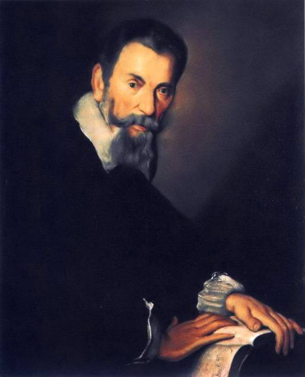

蒙特威尔第（Claudio Monteverdi，1567—1643）
克劳迪奥·蒙特威尔第（Claudio Monteverdi，1567年5月15日—1643年11月29日），意大利杰出的歌剧作曲家，代表了意大利牧歌的最高水平。
二十岁时完成了他的处女作《五声部牧歌》，由此一举成名。他的音乐犹如人的躯体，富有鲜明的个性和炽烈的热情，从而将巴洛克音乐推向高潮。
他注意吸取前人的经验，巧妙地运用传统的复调音乐手法，把乐曲的形式固定在歌剧中，并明确规定音乐的表现手法必须服从于戏剧情节的需要。 他的歌剧感情色彩浓厚，重视对人物心理方面的刻画，并首创以管弦乐队来伴奏歌剧，为音乐的展开提供了广阔的余地。
其作品大胆运用不协和和弦，利用序曲、重唱、间奏曲以加强戏剧音乐的表现力与舞台气氛。又创用弓弦乐器的手震音、拨弦奏法，充分发挥各种乐器的性能， 使得复调音乐形成了风格，即“现代风格”和“装饰风格”为近代管弦乐法的先导。
蒙特威尔第在音乐史上的评价很高，有人说他是集16世纪文艺复兴复调音乐之大成，开17世纪巴洛克音乐之先河
同时其又是文艺复兴时期晚期牧歌的代表，有代表作《残酷的牧羊女》
原文来自知乎用户：胡大水